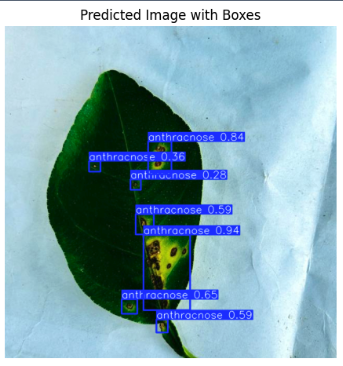
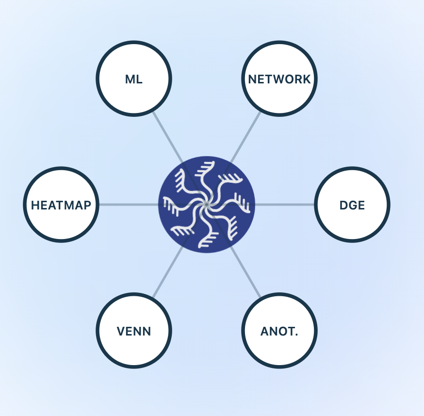
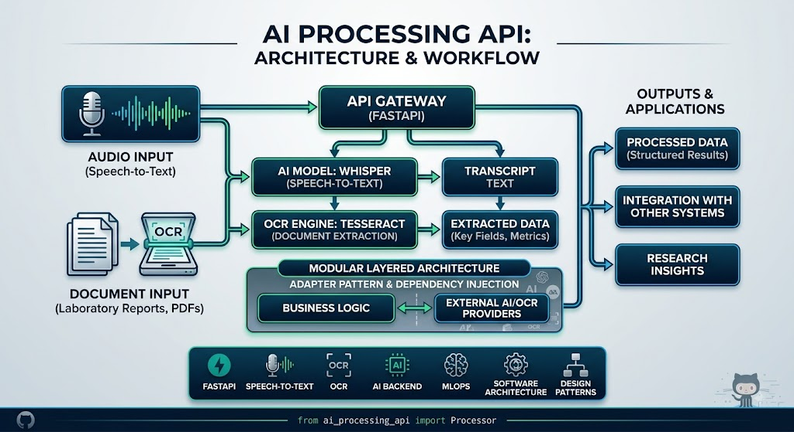
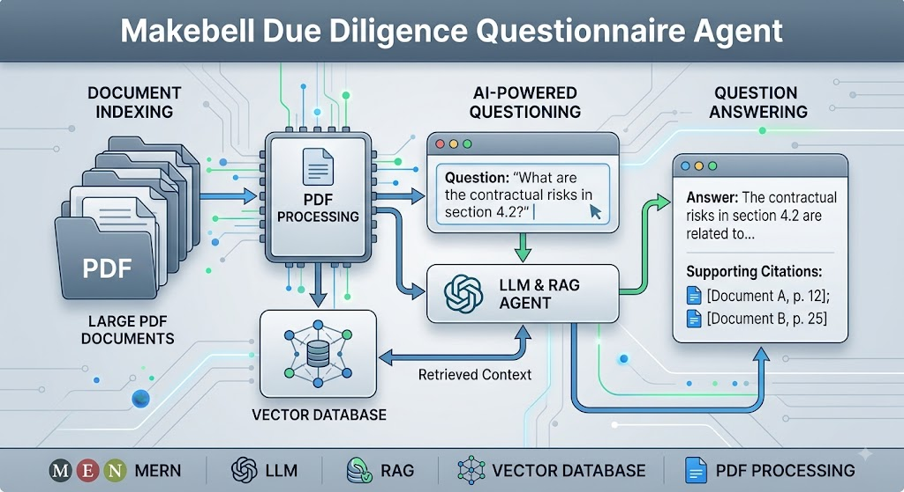
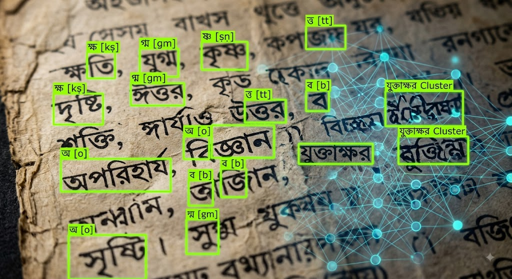
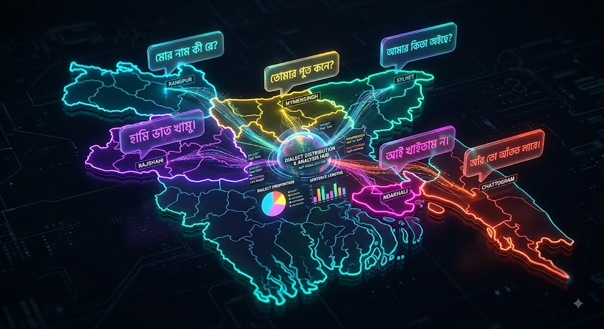

I am a Machine Learning Engineer and AI researcher with a background in Software Engineering. My interests lie in Machine Learning, Deep Learning, Natural Language Processing, Computer Vision, Large Language Models, and AI systems.
I recently graduated in Software Engineering from Shahjalal University of Science and Technology (SUST) in Bangladesh.
I am particularly interested in building intelligent systems that combine machine learning research with reliable, scalable software engineering.
AI for Healthcare and Agriculture, Computer Vision, and Large Language Model.
Bachelor of Science in Software Engineering
My research interests focus on developing practical AI systems using modern machine learning and deep learning techniques.

Developing a deep learning-based object detection system for identifying and localizing diseases in lemon leaves using the LLDDet dataset.
Fine-tuned a YOLOv11m model on annotated lemon leaf images dataset and achieved a test mAP of 0.93.
Topics: Deep Learning, Computer Vision, Object Detection, YOLOv11, Agricultural AI, Dataset Development

An interdisciplinary research project integrating machine learning and bioinformatics for transcriptomic biomarker identification.
Implemented scalable machine learning deployment and monitoring pipelines and collaborated with researchers from the Department of Biochemistry and Molecular Biology at SUST.
Topics: Machine Learning, Bioinformatics, Transcriptomics, Biomarker Discovery, MLOps
Worked as an ML-focused software engineering intern, contributing to research and development in computer vision, image processing, and generative AI.
Technologies: Python, Deep Learning, Computer Vision, Diffusion Models, FLUX, Generative AI
Here's a selection of my machine learning and software engineering projects.
A chrome extention project designed to block unwanted social media content and improve digital focus by restricting access to distracting platforms.
Stack: Python, Automation, Web Blocking
An AI-powered healthcare monitoring platform that combines a custom machine learning model with real-time monitoring and generative AI based health recommendations.
Stack: MERN, Python, Machine Learning, FastAPI, Gemini API
Computer vision solution developed for the Duality AI International Competition using synthetic data and modern object detection architectures.
Achieved a private leaderboard score of 0.995.
Stack: YOLO, RT-DETR, PyTorch, Computer Vision, Synthetic Data

A modular AI backend API built with FastAPI for audio transcription and document/laboratory report extraction using Whisper and Tesseract OCR.
Designed with a layered architecture separating API, service, adapter, schema, and validation layers. The system uses the Adapter Pattern and Dependency Injection to support interchangeable speech providers.
Features: Whisper Speech-to-Text, Tesseract OCR, Laboratory Report Extraction, Pydantic Validation, Unit Normalization, Reference-Range Parsing, HIGH/LOW Detection
Tech: Python, FastAPI, Whisper, Tesseract OCR, Pydantic, Pytest, Docker
GitHub
An AI-powered document intelligence system capable of indexing large PDF documents and answering due diligence questions with supporting citations.
Stack: MERN, LLM, RAG, Vector Database, PDF Processing
An integrated machine learning framework for IoT intrusion detection using the CICIoT2023 dataset, combining clustering, taxonomy-based label refinement, supervised classification, and explainable AI. XGBoost and Random Forest achieved over 99.4% accuracy across major attack families.
Stack: Python, Scikit-learn, XGBoost, LightGBM, PyTorch, K-Means, DBSCAN, SHAP, CICIoT2023
A hybrid NLP framework for classifying ERP product reviews into positive, neutral, and negative sentiments. The project compares Logistic Regression, Random Forest, LSTM, GRU, and RoBERTa, with RoBERTa achieving approximately 92% accuracy by capturing contextual information and domain-specific language.
Stack: Python, NLP, Scikit-learn, LSTM, GRU, RoBERTa, Transformers, Data Augmentation
An AI-powered financial document question-answering system that extracts text and financial tables from PDFs, performs semantic retrieval and reranking, and generates context-aware answers using Gemini. The system combines vector search, structured data retrieval, query optimization, and CrossEncoder reranking to improve answer quality.
Stack: Python, PyMuPDF, pdfplumber, Pandas, FAISS, Sentence Transformers, CrossEncoder, Gemini, RAG
An ML-powered cardiovascular disease risk prediction system using XGBoost with feature selection to identify high-risk patients from clinical and health-related features. The model achieved approximately 73% accuracy and provides real-time risk predictions through a web-based interface.
Stack: Python, XGBoost, Scikit-learn, Feature Selection, FastAPI, HTML, CSS, Machine Learning
A research project investigating privacy-preserving machine learning using Differential Privacy (DP). The study explores DP-SGD, Laplace, and Gaussian mechanisms to protect sensitive data while analyzing their impact on model performance and evaluating privacy risks such as Membership Inference Attacks.
Focus: Differential Privacy, DP-SGD, Laplace Mechanism, Gaussian Mechanism, Membership Inference Attacks, Privacy-Accuracy Trade-off

A Bengali character recognition project focused on detecting and identifying 93 Bengali character and conjunct classes, including vowels, consonants, modifiers, digits, and compound letters. The project involved preparing the PromitoLipi2 dataset for deep learning-based object detection and OCR.
Pipeline: Mapped 93 Bengali character classes, converted PASCAL VOC XML annotations into YOLO format, automated dataset preprocessing, and developed bounding-box visualization tools for annotation verification.
Stack: Python, OpenCV, Matplotlib, YOLO, Object Detection, OCR, PASCAL VOC, YOLO Annotation Format

A Bengali NLP project for classifying text based on regional dialects across 6 districts of Bangladesh: Kishoreganj, Narail, Tangail, Narsingdi, Rangpur, and Chittagong. The dataset contains 39,252 Bengali text samples with exploratory analysis of district distribution and sentence length characteristics.
Process: Data preprocessing, dataset merging, missing-value analysis, district distribution analysis, sentence length analysis, and exploratory data visualization.
Stack: Python, Pandas, Matplotlib, NLP, Exploratory Data Analysis
Machine Learning, Deep Learning, NLP, CNNs, RNNs, Transformers, PyTorch, TensorFlow, Feature Engineering
LLMs, Prompt Engineering, Fine-tuning, RAG, Vector Databases, LangChain, AI Agents, Hugging Face, Diffusion Models
OpenCV, YOLO, Object Detection, Image Processing and Generation, Ensemble Learning
Python, C, C++, Java, JavaScript
FastAPI, REST APIs, Docker, Git/GitHub, CI/CD, Azure, SQL, MongoDB
OOP, SOLID, Design Patterns, DSA, Software Architecture, Unit Testing